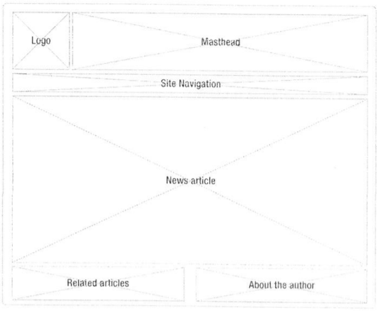
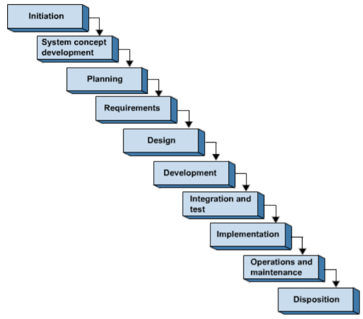
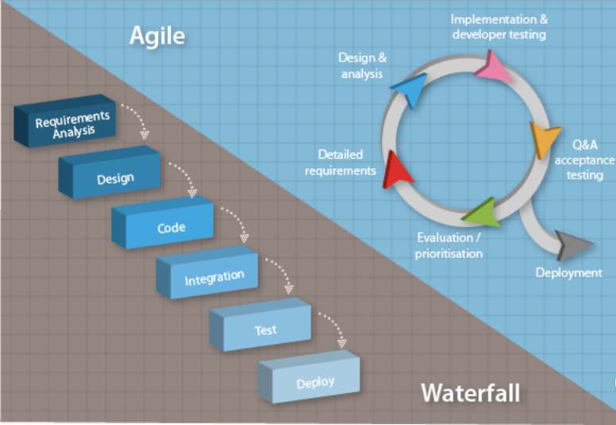
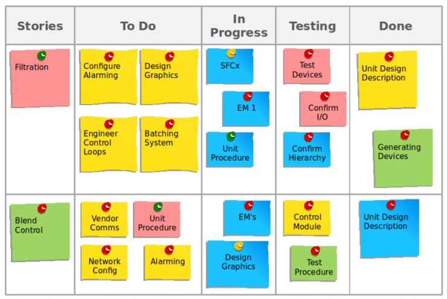

Når man planlægger et projekt er det vigtigt at have overblik over hvad kunden ønsker, men også hvad der forventes. I opstartsfasen er det vigtigt at man har gjort sit hjemmearbejde, da det er at gå mere professionelt til værks, det her også i denne fase kunden kommer til at kende dig, og du kommer til at kende kunden. Det er vigtigt at finde ud af så meget som muligt omkring kunden, og det kan hjælpe at både søge omkring virksomheden, men også omkring personen man skal til møde med på nettet inden man skal til det første møde.
For eget vedkommende kan det være rart at lave en lille præsentation inden, omkring hvem man er, hvad man har lavet – det er dog klogt at overveje hvad kunden har brug for at vide. Man kan f.eks. kigge på hvad kunden kan finde om en på nettet, hvad man kan vise af ting man har lavet inden, og altså også hvad man kan tilbyde og hvad kunden skal levere for at man kan udføre det arbejde de ønsker.
Når det kommer til samtalen, kan man igennem forberedelser komme til at styre den lidt, og samtidigt holde kunden i fokus.
Der er 9 forskellige stadier i den gode samtale:
Forberedelsen – vigtigt at udtænke hvem der gør hvad i samtalen (især hvis man er flere på et hold)
Indledende snak – præsentation uden selv at være i centrum.
Behovsafklaring og behovsaktualisering – spørg ind til kundens situation, sæt hans problem og ikke eget produkt i fokus.
Udbyttepræsentation – Sæt ord på hvilken løsning man kan levere (spil til følelser og intellekt)
Produkt præsentation - gå i detaljer med løsningen der kan leveres, men aldrig lov mere end man kan holde.
Indvendinger – vis forståelse overfor kundens modargumenter, uden at slippe egen holdning.
Afslutte salget eller tage næste skridt - hvis kunden er klart til en aftale skal man ikke forsøge at sælge mere, hvis han ikke er kan man vende tilbage med et mere konkret tilbud dagen efter
Opfølgning – kontakt kunden, lige meget udfaldet, om ikke andet for at bekræfte den aftale der er indgået.
Din egen evaluering – skriv aftalen ned imens man stadig kan huske den, evt. også forbehold og uafklarede punkter.
Dette kan bruges til at give en ide om hvordan det første kundemøde skal håndteres – og er en god måde at få forventningsafstemt på.
Specificering af krav
”Den gode kravspecifikation er en beskrivelse af, hvordan et digitalt produkt skal opfylde brugerens behov og tilføre værdi til forretningen”
Dataindsamling
Følgende teknikker bliver brugt til dataindsamling:
Spørgeskemaundersøgelser
Interview
Fokusgruppe (gruppeinterview)
Observationer
Prototyping
Det kan også være en god ide at kombinere teknikkerne, f.eks. Kan observationer bruges til at forstå hvilken kontekst opgaven skal udføres i. Interviews kan bruges til at finde specifikke målgrupper, hvor spørgeskemaer bruges til at nå en bredere del af befolkningen. Fokusgruppen kan bruges til at opnå en enighed om opgaven.
Hvis man deler det op i en skala, så er der i den ene ende små vedligeholdelsesprojekter, hvor man aftaler ændringer direkte mellem kunden og udvikleren/designeren. Et andet eksempel på dette kan være når kunden henvender sig direkte til designeren med et ønske om et website. Hvis man kigger i den anden ende af skalaen er det de store projekter. Det kan f.eks. Være en stor virksomhed som har et ønske om et nyt system, hvor det kræver at man tager kontakt til eksternt konsulentfirma, der foretager analyser af organisationer, brugere osv - med henblik for at vurdere behov for it-løsninger og forbedringer af arbejdsgangene.
Hvis man f.eks. Kigger på firmaer som microsoft, så er beslutningerne om at lancerer nye apps baseret på en dataindsamling om målgrupper, deres adfærd og ønsker til nye apps.
Krav specificering
”Kravspecifikationerne skal være et kompromis mellem at kommunikere krav ud til en kunde og definere kravene præcist og tilpas detaljeret for udviklingsteamet”.
Traditionelt er der 2 forskellige slags krav, de funktionelle (som beskriver hvad et produkt kan), og de ikke-funktionelle (som beskriver begrænsninger i udvikling af produktet). Ikke funktionelle krav kan være at siden skal være brugervenlig, farverne i firmaets logo skal indgå på siden, man skal kunne bruge siden fra flere browsere og at man skal kunne shoppe fra en app. I multimediedesign er de følgende krav de typiske der skal overvejes ud fra funktionelle krav – krav til data, den kontekst som produktet skal bruges i (fysisk, social, organisering og teknologier), brugerkarakteristikker, usability og oplevelsesmål.
Produktvision
Produkt vision er en opsamling af målene, det forretningsmæssige, brugere, kontekst for systemet og vigtigste features. ”Produktvision giver en fælles forståelse af, hvad der skal laves og bruges til at holde produktet på sporet”. Et eksempel på en opsummeret produktvision kan være:
”For vores kunder, der gerne vil handle sko på nettet, er vores website (navn) en webshop, som tilbyder en hurtig og sikker handel. I forhold til andre webshops (konkurrenter) tilbyder vi en mulighed for at kunne designe egne sko”.
Kravlister, produktbacklogs og databeskrivelser
I de traditionelle metoder bruges kravlister, hvor alle krav skrives så detaljeret, at der ikke er tvivl om hvad de kan, hvad de betyder, og man kan tjekke at de er opfyldt inden man skal aflevere produktet. I agile metoder bruges en produktbacklog, det er også en liste, men her er kravene prioriteret, og det er kun krav der har en høj prioritering der beskrives meget detaljeret. Som skrevet under agile metoder bliver kravene beskrevet som user stories. Som hjælp til prioriteringen kan man bruge MoSCoW-skalaen, og her bliver kigget på følgende ting:
Must have – nødvendigheder for at produktet kan fungere
Should have – værdi for kunden og brugeren, bør være med hvis det er muligt
Could have – har lidt værdi for brugeren, men er ikke kritisk hvis man undlader
Won’t have – noget der er tænkt på, men som ikke har værdi lige nu.
Her findes også feature og unfeature lister, som konkret fortæller hvad man vil have med og hvad man ikke har med.
Brugerprofiler, personas og aktører
I brugerprofilbeskrivelsen bliver brugeren af produktet beskrevet, og deres mål med at bruge produktet. En brugerprofil er et fiktivt billede af brugeren, men samtidigt også repræsentativt – ofte er et en kort beskrivelse af forskellige mennesker som kunne bruge siden. Personas er stand-ins som skal repræsentere mange faktiske brugere, som man regner med at der kommer til at bruge produktet når man er færdig, det er ligesom dem man prøvekører det på. En aktør er den rolle en brugerprofil har ved brug af produktet. En aktør er med til at give et overblik over brugerens mål med at bruge produktet.
Scenarier og use cases
Scenarier er en konkret historie om hvordan personas vil bruge produktet til en bestemt aktivitet eller løsning af en opgave – det beskrives hvordan personen handler og tænker. Det er ofte mindre formelle beskrivelser, og bliver ofte brugt ved brugere som tænker, føler og gør mange forskellige ting. Use cases har mere fokus på interaktion mellem bruger op system, og er ofte meget mindre omfattende end scenarier – det kan være en beskrivelse af scenariekonsekvenser. Man bruger ofte use cases til at beskrive forskellige dele af scenarier. Gennem disse 2 bliver produktets funktionalitet demonstreret.
Prototyper
Prototyper og skitser bliver brugt til at udforske og være mere præcis med kravene – f.eks. visualisering af indhold og funktionalitet, som ikke kan beskrives præcist. Det kan give retningslinjer for designet, som en ekstra sikring på brugervenlighed.
Her kan man også kigge på wirerframes (som visuelt viser hvordan siden skal opbygges med bokse), og mockup som viser det næsten færdige produkt, inden slutfasen begynder.

Projektmodeller
Et projekt bliver defineret som en unik opgave, med en serie af aktiviteter, der hænger sammen, et konkret mål og et tidspunkt for start og slut. Projektstyring er, ligesom navnet siger, en proces hvor man planlægger, organiserer og kontrollere projektet – for at opnå det mål der er blevet sat. De traditionelle metoder indeholder en grund specificering af krav, planlægning, eksekvering, ingen tilbageløb – og vandfaldsmodellen (se billede).

Men der følger også kritik med til de traditionelle metoder. Man kender ikke alle kravene når man starter et projekt, og disse kan ændre sig i løbet af processen – som kan være uforudsigelig hvis der bruges nye værktøjer. De dårlige erfaringer siger at man ofte bliver mødt af overraskelser, forsinkelser og fordyrelser undervejs, og ikke altid ender ud med et produkt som lever op til det mål der var sat fra start.
Som modsvar til de traditionelle metoder findes de agile metoder, som gør op med de problemer og den kritik de traditionelle metoder møder. I disse metoder er der fokus på individer og samarbejder (i modsætning til processer og værktøjer), software (i modsætning til dokumentation), samarbejde med kunden (fremfor kontraktforhandling) og håndtering af forandringer (frem for en fast plan).

10 kendetegn ved agile metoder:
Active user involvement is imperative
The team must be empowered to make decisions
Requirements evolve but the timescale is fixed
Capture requirements at a high level; lightweight & visual
Develop small, incremental releases and iterate
Focus on frequent delivery of products
Complete each feature before moving on to the next
Apply the 80/20 rule
Testing is integrated throughout the project lifecycle – test early and often
A collaborative & cooperative approach between all stakeholders is essential
Af agile metoder findes SCRUM, som vi har brugt her i første semester.
De vigtigste begreber er:
Produkt • Produkt ejer (rolle) • Scrum master (rolle) • Opgaver • Product backlog • Sprint • Sprint start meeting (sprint planning) • Sprint backlog • Task board • Burn down chart • Daily Scrum meeting (stand up) • Sprint review • Sprint retrospective
Der finds 3 artefakter indenfor SCRUM og det er product backlog, med userstories som er et fast format (som ___ har jeg brug for ___ så ___ ), men det er også sprint backlog og burndown chart.
Backlog er en list med ønsket funktionalitet, hvor de er prioriterede, og består af user stories, som er formuleret fra brugerens perspektiv. Alt arbejdet bliver inddelt i sprints, hvor man starter med sprint planning og afslutter med sprint review. Sprintbacklog er der hvor man får overblik over de forskellige sprints, og hvor langt man er nået med dem. En scrum burndown chart viser hvor langt man er nået i processen – hvad der er færdigt og hvad der mangler.
Vi har brugt SCRUM i forskellige projekter i løbet af semesteret, men der hvor det især kom til at give mening for mig var under one page projektet. Her lavede vi et scrumboard, med alle de opgaver der skulle løses, og holdte forholdsvis ofte ”møder” omkring hvilke ting der var på plads og hvad der skulle arbejdes videre med. Det var rart at kunne gå tilbage i processen, hvis vi blev mødt af noget vi ikke havde forventet, og lave om, men samtidigt have et fuldt overblik.
